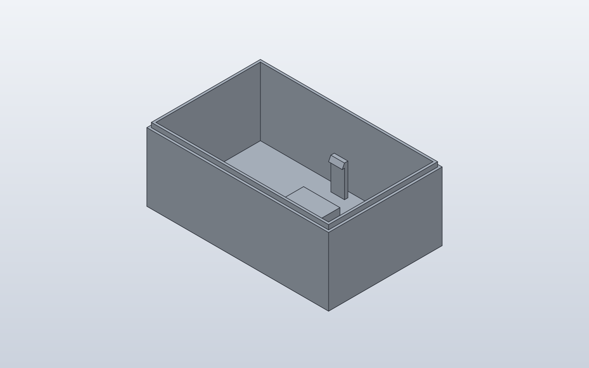

Native verified
Plate
A rounded plate with four holes
100 × 60 × 10 mm; four Ø8 mm holes
Explore model →Explore six small CAD designs and their construction stages. Python SCPF emits native SolidCraft commands; SolidCraft creates the final BRep model.
New to SCPF? Open the SCPF cheatsheet for 2D/3D primitives, operations and examples.
Each model has its Python source, generated command JSON and a readable operation timeline. PR previews may show existing main renders for reference, explicitly labelled as not verified for the PR revision.
7 models 6 matching native screenshots
A rounded plate with four holes
100 × 60 × 10 mm; four Ø8 mm holes
Explore model →
A box, sphere and three crossing bores
50 mm cube; three crossing cylindrical cuts
Explore model →
Original four-sketch history: Base, Holes, Boss, Bore
80 × 50 × 8 mm; R6; Ø24 × 14 boss
Explore model →
An L-shaped extrusion with two mounting holes
60 mm wide; 6 mm wall; two Ø8 mm holes
Explore model →24 mm plywood corner bracket with four countersunk mounting holes
24 mm width, 12 mm wall, 60 mm arms; four Ø5.4 mm holes
Explore model →
Raspberry Pi 4 case with connectors, vents and engraving
95 × 66 × 24 mm; R5; PETG; 4 × M2.5 standoffs
Explore model →
A shelled enclosure with native plastic design features
80 × 50 × 30 mm; 2 mm wall; two Ø7 × 12 bosses
Explore model →Use a Python dataclass and a build() method, without a mandatory show() or explicit return.
SCPF outputs native SolidCraft commands, with named parameters and a sequence of CAD operations.
The SolidCraft engine creates editable geometry, and CI validates its results. CAD and verification assets are only published when they match the source revision.
Review the command timeline, native measurements and optional rendered preview. An unverified model is labelled as such.
Source revision: a6e4d17de288afa6a6fe20072d3927e4fd30ae15